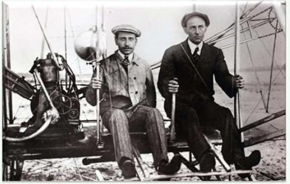

đương. Đó là một cốt truyện phổ biến của lịch sử kinh tế mà những người bi quan, những người không dự báo theo đường thảng, quá dễ bị lãng quên. Thứ ba là tiến độ xảy ra quá chậm để nhận thấy, nhưng thất bại xảy ra quá nhanh nên không thể bỏ qua. (ó rất nhiều bi kịch chỉ qua một đêm. Hiếm khi có những điều kỳ diệu trong một sớm một chiều. Vào ngày 5 tháng 1 năm 1889, Detroit Free Press đã chống lại giấc mơ ấp ủ bấy lâu một ngày nào đó con người có thể bay như một con chim. Máy bay, tờ báo viết, “dường như không thể”: = Trọng lượng nhỏ nhất có thể có của một chiếc máy bay, với nhiên liệu cần hiết và kỹ sư, không dưới 300 hoặc 400 pound (180kg) ... nhưng có giới hạn về trọng lượng, chắc chắn không vượt quá 50 pound (22kg), vượt quá mức đó là điều không thể với động vật bay. Thiên nhiên đã đạt đến giới ạn này, và dù con người cố gảng hết sức sẽ không thể vượt qua nó. Sáu tháng sau, 0mville Wiight bỏ trung học để giúp anh trai, Wilbur, thợ rèn trong nhà kho ở sân sau của họ để xây dựng một nhà máy in. Đó là phát minh chung đầu tiên của hai anh em. Nó sẽ không phải là cuối cùng của họ. Nếu bạn phải đưa ra danh sách những phát minh quan trọng nhất của thế kỷ 20,máy bay ít nhất sẽ đứng top 5, nếu không muốn nói là số một. Máy bay đã thay đổi mọi thứ. Nó bắt đầu các cuộc chiến tranh thế giới, nó kết thúc các cuộc chiến tranh thế giới. Nó kết nối thế giới, thu hẹp khoảng cách giữa các thành phố và cộng đồng nông thôn; đại dương và quốc gia. Nhưng câu chuyện về nhiệm vụ chế tạo chiếc máy bay đầu tiên của Anh em nhà Wright có một bước ngoặt hấp dẫn. Sau khi họ chinh phục chuyến bay, dường như không ai nhận ra. Dường như không ai quan tâm. Trong cuốn sách năm 1952 về lịch sử nước Mỹ, Frederick Lewis Allen đã viết: Vài nắm trôi qua trước khi công chúng biết được những gì anh em nhà Wright đang làm; mọi người tin việc bay là điều không thể, đến nỗi hầu hết những người nhìn thấy họ bay về Dayton [0hio] vào năm 1905 đều coi những gì họ đã thấy là một trò lửa bịp — như mọi người ngày nay đánh giá về thần giao cách cảm. Mãi cho đến tháng 5 năm 1908 - gần
